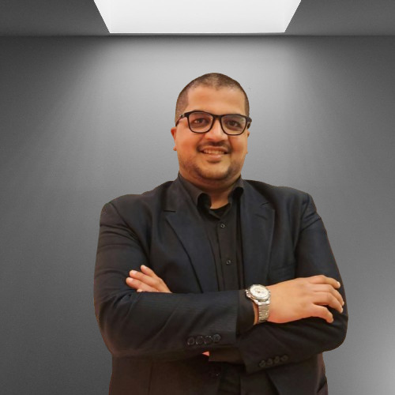

اعوجاج وتقوس الساقين
تقييم محور الطرف السفلي ومتابعة النمو وتحديد الحاجة للتدخل.
مع د. هشام الحناوي، أخصائي جراحة العظام والكسور وتشوهات الأطفال. نهتم بفهم حالة الطفل وتوضيح الخيارات العلاجية للأسرة، وفق التقييم الطبي لكل حالة.

نهدف لتقديم تقييم واضح لمشكلات العظام والحركة لدى الأطفال، مع شرح الحالة للأهل ومناقشة المتابعة أو التدخل العلاجي عند الحاجة.
يمكن إضافة المؤهلات والعضويات العلمية هنا بعد مراجعة المستندات الرسمية والتأكد من صياغتها الدقيقة.
اهتمام خاص بعظام الأطفال والتشوهات والعيوب الخلقية.
الخدمات التالية مجالات عامة للتقييم الطبي؛ وتحدد ملاءمة العلاج بعد الكشف.
تقييم محور الطرف السفلي ومتابعة النمو وتحديد الحاجة للتدخل.
تقييم المشي للداخل أو الخارج والمشي على أطراف الأصابع.
تقييم تشوهات الأطراف منذ الولادة ووضع خطة متابعة مناسبة.
تقييم الإصابات والكسور ومتابعة الالتئام وفق الحالة.
تقييم القدم المسطحة وانحرافات القدم ومشكلات وضعيتها.
التقييم الإكلينيكي وتحديد الفحوص المناسبة عند وجود أعراض.
يرجى تأكيد الموعد هاتفيًا قبل التوجه؛ قد تتغير المواعيد. البيانات أدناه قابلة للتحديث بسهولة من ملف الموقع.
أمام قرية عبد الوهاب للمشويات، فوق قطونيل، برج الأطباء
السبت والاثنين • 7:00 مساءًاتصال للحجز: 01500051034يرجى الاتصال لتأكيد عنوان الفرع
السبت • 9:00 مساءًشارع الجلاء، أمام معامل صفوت شاكر
الثلاثاء • 6:00–9:00 مساءًاتصال للحجز: 01011472504أمام مديرية الأمن
الخميس • 6:00–7:30 مساءًالحجز: 15853شارع 45
الثلاثاء • 9:30 مساءًاتصال للحجز: 01144477718تفاصيل الموعد والحجز قيد التأكيد قبل النشر.
اتصل للاستفسار عن المواعيدوسائل التواصلالقرار يعتمد على الأعراض والفحص والعمر، وليس شكل القدم وحده.
بعض الأنماط تتغير مع النمو، لكن الألم أو العرج أو التدهور يستدعي التقييم.
بعض مشكلات مفصل الحوض قد تظهر في صورة ألم بالركبة وتحتاج فحصًا دقيقًا.
هذه معلومات تثقيفية عامة وليست بديلًا عن الفحص الطبي أو نصيحة علاجية فردية.
اختار مكان الكشف من المواعيد بالأعلى، أو تواصل عبر صفحة فيسبوك للاستفسار عن الحجز.